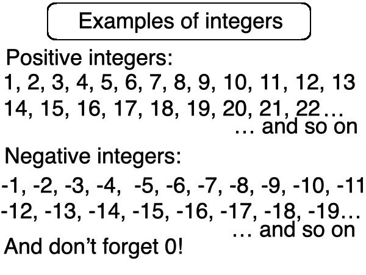
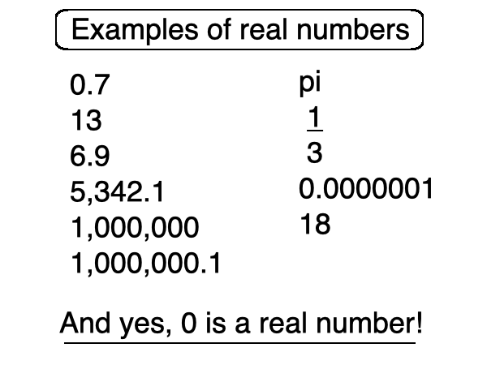
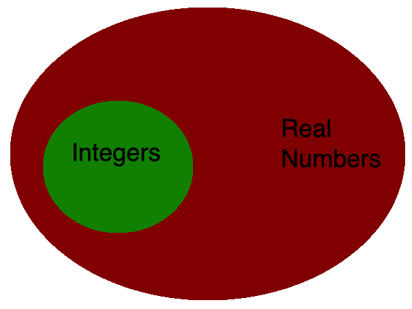
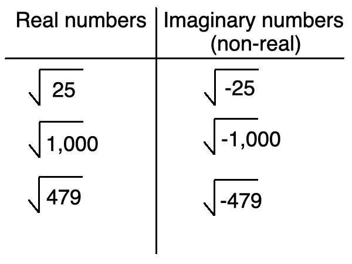
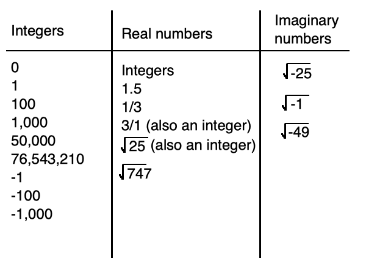

you smart good
Programming Concepts
Integers vs real numbers
We've been using the word integer a lot up until this point. But what the heck is an integer?
Simply put, integers are whole numbers. Numbers like 1, and 34, and 1,000,000.
Integers can also be negative. So anything like -1, -23, -647. All of these numbers are also integers.
And yes, even our good friend 0. Also an integer!

But these aren't the only numbers that exist, are they? What about all the numbers in between? What about numbers like 1.5 and ⅔ and π?
These are all examples of real numbers.
Real numbers are all the numbers in between integers, as well as integers themselves.
So numbers like 0.5, 5.5, ⅕, and √5 are all examples of real numbers.
And yes, 5 is also a real number. But be careful, because 5 is also an integer.

So integers consist of all the whole numbers, positive or negative.
Real numbers consist of all integers, as well as all the numbers in between.
This means that all integers are real numbers, but not all real numbers are integers.

So you probably think you get it, right? you're saying to yourself, "okay, all numbers are real numbers."
Well... this isn't exactly correct. Let's think about square roots for a second. You probably know that the square root of 25 is 5. And the square root of 49 is 7(I'm not teaching you square roots in this class, these are just examples. if you don't know what a square root is, google it).
What about the square root of a negative? Something like √-25. We know to get to the radicand of a square root, it's a number multiplied by itself (ex: 5x5=25), but what if the number is negative?
Any number times itself is positive (5x5=25, -5x-5=25), so we can never have a negative radicand for a square root. This is called an imaginary number, or a non-real number.

There are other types of imaginary numbers, but this is as in-depth as we will go in this class with this concept. I just wanted to make you aware that other kinds of numbers exist.
So remember:
1. Integers are whole numbers, positive and negative, and 0.
2. Real numbers are all integers, as well as the numbers in between integers.
3. Imaginary numbers, such as square roots of negatives, are not real numbers.
